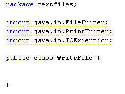
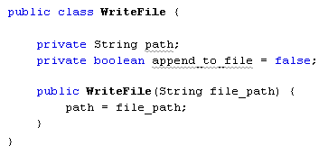
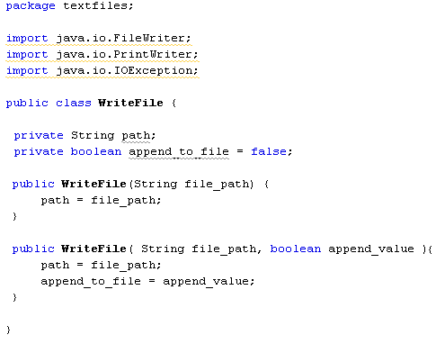
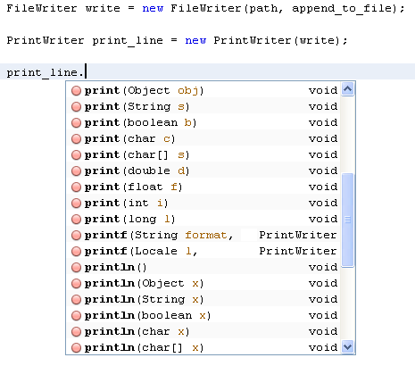
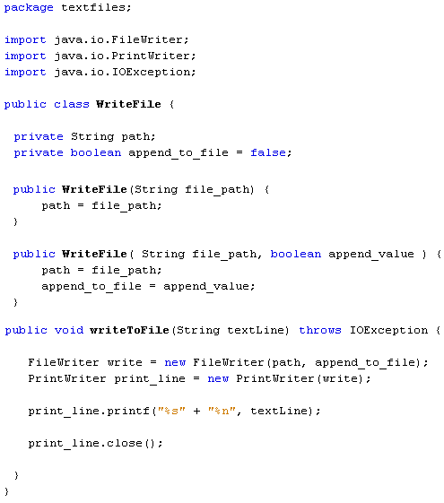
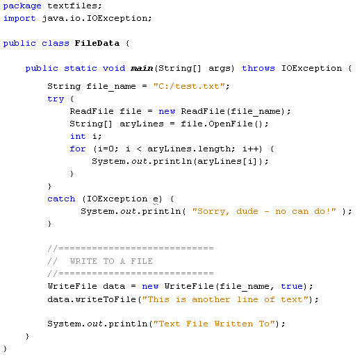
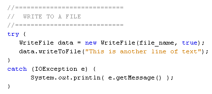
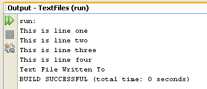
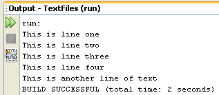

Writing to a file is a little easier than reading a file. To write to a file, we'll use two more inbuilt classes: the FileWriter class and the PrintWriter class.
Create a new class in your project by clicking File > New File from the NetBeans menu. Select Java in the Categories section of the dialogue box and Class from the File Types list. Click the Next button at the bottom. For the Class name type WriteFile, then click Finish. Add the following three import statements your new code:
import java.io.FileWriter;
import java.io.PrintWriter;
import java.io.IOException;
Your new class should look like this:

Again, the underlines are because we haven't used the imported classes yet.
When you write to a file, you can either start from the beginning and overwrite everything. Or you can start at the end and append to the file. The FileWriter class allows you to specify which. We'll add a field that sets the append value for the FileWriter class. We'll also add a field to set the name of the file.
So add the following two fields to your code, plus the constructor:

The boolean field is called append_to_file and has been set to a value of false. This is the default value for the FileWriter class, and means you don't want to append, but erase everything in the file.
The constructor sets a value for the path field (instance variable), which is the name and location of the file. This will get handed over when we create a new object from our WriteFile class.
As was mentioned in the previous section, however, you can set up more than one constructor in your code. We can set up a second one and pass in an append value. That way, a user can either just use the first constructor and hand over a file name, or a file name and an append value. So add the following constructor below the first one:
public WriteFile( String file_path , boolean append_value ) {
path = file_path;
append_to_file = append_value;
}
This second constructor now has two values between the round brackets, a file path and an append value. If you want to append to the file you can use this constructor when creating a new object. If you just want to overwrite the text file then you can use the first constructor.
Your code window should now look like this:

To write to the file, add the following method below your two constructors:
public void writeToFile( String textLine ) throws
IOException {
}
This method doesn't need to return a value, so we've made it void. In between the round brackets of the method name we have a String variable called textLine. This is obviously the text we want to write to the file. Again, though, we need to add "throws IOException" as we need to do something to handle file-writing errors.
The first thing we need in the method is a FileWriter object. The FileWriter takes care of opening the correct file, and of storing the text as bytes. Add the following line to your writeToFile method:
FileWriter write = new FileWriter( path , append_to_file);
So we're creating a new FileWriter object with the name write. In between the round brackets of FileWriter we pass the name and location of the file, plus the append value. This will either be true (append to the file) or false (don't append). If a file of the name you pass over does not exist, the FileWriter creates one for you.
The FileWriter write bytes, however. But we can hand the FileWriter plain text with the aid of the PrintWriter class. The PrintWriter has a few handy print methods for this. But it needs the name of a FileWriter when creating the object from the class. So add this line to your method:
PrintWriter print_line = new PrintWriter( write );
Our PrintWriter object is called print_line. In between the round brackets of PrintWriter, we've added the name of our FileWriter object.
To add the text to a file, type the name of the PrintWriter object followed by a dot:
print_line.
As soon as you type the dot, NetBeans will display a list of available options:

There are an awful lot of print options on the list!
The one we'll use is one of the printf methods. This allows you to pass a formatted string of text to your PrintWriter. A good reason for using printf is to handle new line characters. The new line character differs, depending on which operating system you use. Windows will add the characters \r\n for a new line. But Unix systems just use \n. Using the printf function will ensure the correct encoding, no matter what the platform.
Add the following line to your code:
print_line.printf( "%s" + "%n" , textLine);
We've handed the printf method two things: a format for the text, and the string we want to write to the file. The two are separated by a comma. Notice the first of the two:
"%s" + "%n"
The %s between double quotes means a string of characters of any length. The %n means a newline. So we're telling the printf method to format a string of characters and add a newline at the end. The actual text that needs formatting goes after the comma. The printf method is quite useful, and we'll go through the options in more detail in a later section. For now, let's crack on.
Only one more line to add to your method:
print_line.close();
This line closes the text file and frees up any resources it was using.
Your WriteFile class should now look like this:

To test out your new class, go back to your FileData class (the one with the main method). Add the following line to create a new object from your WriteFile class:
WriteFile data = new WriteFile( file_name , true );
So we've set up a WriteFile object called data. In between the round brackets of WriteFile, we've added two things: the name of the file, and an append value of true. This will ensure that the second of the constructors we set up gets called. If we wanted to just overwrite the file, then the code would be this:
WriteFile data = new WriteFile( file_name );
Because we set the default append value as false, we only need the file name if we want to overwrite the entire contents.
To call the writeToFile method of your WriteFile object, add this line:
data.writeToFile( "This is another line of text" );
Feel free to change the text between the round brackets of the method.
To let the user know that something has happened, you can print something to the Output window:
System.out.println( "Text File Written To" );
Your FileData code should now look like this (we've added some comments):

If you like, add another try … catch part for your text writing. Instead of the above, change it to this:

Now run your code to test it out. You should see the contents of your text file in the Output window followed by the message that the text file has been written to:

Run the programme again and you should see the new line appear. (You can comment out the code that writes to the text file.)

And that's it - you can now write to a text file and read its contents. In the next section, we'll move on and tackle programming with Java Forms.